2 Algorithms, Product
2.1 Misc
Fundamentally, in the context of for-profit businesses, almost any analytics problem can be cast as an optimization problem where some aspect of the business needs to be maximized or minimized. In most cases, it is some kind of **revenue maximization** or **cost** **minimization**.
Also see [Business Plots](Business Plots)2.2 Price Optimization
- Notes from:
- https://www.statworx.com/ch/blog/food-for-regression-using-sales-data-to-identify-price-elasticity/
- results in tables are jacked up
- https://www.statworx.com/de/blog/food-for-regression-mixing-in-cross-elasticities-and-promotional-effects/
- https://www.statworx.com/de/blog/combining-price-elasticities-and-sales-forecastings-for-sales-improvement/
- https://www.statworx.com/ch/blog/food-for-regression-using-sales-data-to-identify-price-elasticity/
- Allows pricing to be used as a tool to target KPIs
- Forecasted sales are lower than expected. According to the price elasticity, which price will allow us to reach our sales target?
- Forecasted sales are higher than expected. According to the price elasticity, which price will increase profit while staying inline with our sales target.
- Questions:
- how many unitss can we expect to sell at a given price?
- How does a 10% price change affect demand?
- Data
- Variables are time series.
- Basic variables:
- Price
- Sales or orders
- Potential variables
- Competitor prices
- Logging this variable (as with your product’s Price) usually produces the best results.
- In-store alternatives
- Price
- Sales
- New promotional activities
- Dummy variable
- Seasonal effects
- Competitor prices
- Price Elasticity of Demand (PED) - measures the responsiveness of the demand to changes in price
Almost always negative – except for luxury goods (Veblen) and Giffen goods(?)
- A positive elasticity can indicate an omitted variable.
means relatively inelastic where demand hardly changes in response to a change in price
means relatively elastic where demand is responsive to price changes
means unitary elastic where revenue is maximized and price is optimized
- Coefficients aren’t decimal percents (e.g. the regression coefficient of 1% elasticity will be 1 not 0.01)
- Coefficient interpreted as a 1% increase in Price results in a <β1> percent change in Demand.
Common Models
- 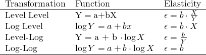
- Where Y = demand (e.g. sales, orders), and X is price
- Log-Log fits more closely with economic theory and is usually the optimal choice.
- 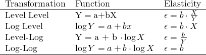
- 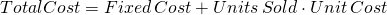
- These costs can be per day, per month, etc.
- 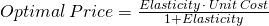
- Optimal price doesn’t depend on fixed costs
- Cross Price Elasticity - The responsiveness of demand for your product to changes in a competitor’s price
- Positive values are common. Higher prices of a competitor (substitutional good) should result in increase sales for your product. Thus, a positive elasticity.
- Negative values can occur if the competitor raises prices on a complementary good, which is good that is often purchased along with your product.
- A rise in the price of oil filters many depress sales of engine oil.
- Advanced Log-Log model:
- Additionally includes Competitor Price and dummy variables for a Promotional Campaign and Summer months
- 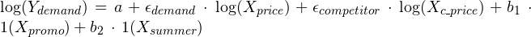
- Use price elasticity of demand (PED) to find the price required to meet a sales target
- Cobb-Douglas function
- 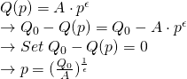
- Q(p) is quantity sold as a function of price, p
- A is forecasted sales
- ε is the PED
- Q0 is our sales target
- Q0 - Q(p) = 0 since we want our quantity sold to equal our sales target
- 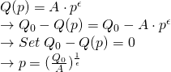
- We can use ARIMA, ETS, etc to forecast sales for the period that Q0 covers, model the price elasticity, and then calculate the price.
- Used CIs for the PED to give a range of prices
- I’d also incorporate the forecast CIs
- Used CIs for the PED to give a range of prices
- Cobb-Douglas function
{kind=link}
2.3 Cost Benefit Analysis (CBA)
- Notes from: http://freerangestats.info/blog/2019/11/24/cost-benefit-analysis
- Also see
- Project Management >> Decision Model
- Video Bizsci learning lab 68
- {tidyquant} has excel functions for Net Present Value (NPV), Future Value of Cashflow (FV), and Present Value of Future Cashflow (PV)
- Net Present Value - the real value of benefits in today’s dollars minus the real value of costs (where the “real” value means future values are discounted by some chosen discount rate - the choice of which makes a big difference to how much the analysis values either the short term or the long term)
- 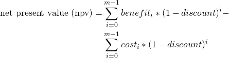
- m is the number of years (or whatever time unit) for the investment
- benefit is the benefit value (e.g. revenue) for each year of the investment (vector)
- cost is the cost value for each year of the investment (vector)
- Cost and benefit must have the same unit of measurement (e.g. dollars) and be vectors of equal length.
- discount is the discount rate (decimal)
- Minimum expected return on investment. 10% is common and 5% is usually the minimum, i.e. a replacement-level ROI. If the discount rate is 10% percent, then that says that the current investment strategies are yielding at least 10%, so this one should be at least that good. The thinking is, “why spend money on this investment if it has a lower discount rate instead of putting it to work in one of the other strategies that’s yielding at least 10%?”
- Example references New Zealand and Australia governmental guidelines for various departments that range from 5-7%.
- Notice i starts at 0 and goes to m-1 (investment window remains unchanged). This is because the initial year is “discounted” (whatever that means). The discount quantity in the equation goes to 1 when i = 0, so it’s not a factor in the calculation for the initial year.
- Basic Simulation: Can use the Gamma Distribution to sample different random values for costs and benefits. Then plug into a npv function with a specified discount rate to get a simulated distribution of potential values. Visualize with a density graph.
- This models the potential uncertainty with costs and benefits.
- 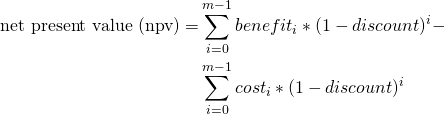
- Internal Rate of Return - the discount rate at which benefits break even with costs
- If the internal rate of return is higher than your cost of capital (aka hurdle rate) and higher than the rate of return of other uses of capital, then it is worth investing in.
- cost of capital typically calculated as Weighted Average Cost of Capital (WACC)
- Project, Planning >> Decision Models >> Terms >> Cost of Capital, Internal Rate of Return
- Morgan Stanley’s Guide to Cost of Capital (Also in R >> Documents >> Business)
- Thread about the guide
- WACC = w1*cost_of_equity + w2*cost_of_debt
- w1, w2 depend on the company’s capital structure (e.g. 70% equity, 30% debt)
- CAPM = Rf + β (Rm - Rf)
- cost_of_equity approximated using capital asset pricing model (CAPM)
- Rf = risk-free rate of return
- Rm = market rate of return
- β = risk estimate or a company’s stock beta or a similar public company’s stock beta
- cost_of_debt = (interest_expense / total_debt) * (1 - T)
- interest_expense = interest paid on company’s current debt
- Since interest expense is tax-deductible, the debt is calculated on an after-tax basis
- T = company’s marginal tax rate
- interest_expense = interest paid on company’s current debt
- As of January 2019, transportation in railroads has the highest cost of capital at 11.17%. The lowest cost of capital can be claimed by non-bank and insurance financial services companies at 2.79%. The cost of capital is also high among both biotech and pharmaceutical drug companies, steel manufacturers, Internet (software) companies, and integrated oil and gas companies.Those industries tend to require significant capital investment in research, development, equipment, and factories.
- cost of capital typically calculated as Weighted Average Cost of Capital (WACC)
- Compute with an optimization function
- Can calculate for specific cost, benefit, and discount rate or use the simulated values (above) to get a density of potential values.
- If the internal rate of return is higher than your cost of capital (aka hurdle rate) and higher than the rate of return of other uses of capital, then it is worth investing in.
- More Complicated Case - benefit and cost, can be broken down into parts with uncertainty included in each estimate
- cost = c(initial_cost, remaining_costs)
- initial_cost = rnorm(n=1, mean = initial_cost_est, sd = initial_cost*uncertainty)
- uncertainty = 0.10 in the example
- “_est” variables or constants are just the initial estimates (given to us from marketing or whoever the stakeholders are)
- remaining_costs = fixed_costs + ad_hoc_costs
- ongoing_costs = rnorm(n=m-1, mean = fixed_costs,, sd = fixed_costs*uncertainty)
- m = investment window
- ad_hoc_costs = rbinom(n=m-1, size = 1, p = ad_hoc_prob)
- costs that occur that weren’t planned for
- ongoing_costs = rnorm(n=m-1, mean = fixed_costs,, sd = fixed_costs*uncertainty)
- initial_cost = rnorm(n=1, mean = initial_cost_est, sd = initial_cost*uncertainty)
- benefits = customers * customer_spend
- customers = customer_level_shift * (1 + customer_growth) ^ (0 : m-1) # m-1 since starting at 0
- customer_level_shift = rnorm(1, customer_level_shif_est, customer_level_shift * uncertainty)
- level shift is described as the number of customers attained in year 0.
- customer_growth = rnorm(1, customer_growth_est, customer_growth_est * uncertainty)
- growth of the customer base after year 0
- customer_level_shift = rnorm(1, customer_level_shif_est, customer_level_shift * uncertainty)
- customer_spend = rnorm(1, customer_spend_est, customer_spend_est * uncertainty)
- customers = customer_level_shift * (1 + customer_growth) ^ (0 : m-1) # m-1 since starting at 0
- cost = c(initial_cost, remaining_costs)
2.4 Customer Journey
Misc
- I think these notes are from a biz sci video
- Also see
- Marketing >> Customer Journey
- Product Development >> Conversion Funnel
- EDA on channel groups that lead to transactions for 1st purchasers, 2nd purchasers, etc. Use binary classification model to develop a strategy around predictor variables that increase or decrease the probability that a customer will perform a transaction
Process
- Define the different scenarios to cover
- Make groups of experts so they can cover each scenario
- Over the user journey in our application, map each user behaviour to the events or data
- Prioritize per step and select the minimum events needed to explain the user behaviour
- Combine all the events for the data scientists to use as features for the segmentation or modelling
Google store data - visitor_id, session_id (each row is a session), channel_group, date, total_transactions (# of transactions per session, na = no transaction)
Channels:
- organic - google searching
- direct - email
- referral - hyperlink on website
- display - ads on websites
path splitting
- cust_id
- group by cust, transaction, channel
- cust_id
Cleaning steps
- total trans -> only 1 or 0 (trans or no trans(NAs))
- groupby visitor
- arrange by date
- cumsum trans to create var so 1st purch = 1, 2nd purch = 2, …, etc
- lag(cumsumvar) to create a path
- merge vistor and path to create a visitor_path_id
- create an indicator to show whether a path_id ended in trans or not
- filter only paths that ended in transaction
- count number of visitor_path_ids for each transaction number (1st purchase, …) and remove transaction numbers with few visitor_path_ids
Viz
- ball and stick: (plotly with buttons that select 1st purchase, 2nd purchase, … etc.)
- Which channel types have the greatest proportion of transactions for 1st purchasers, 2nd purchasers, etc.?
- y axis: channel type
- x axis: percent ending in transaction
- heatmap: customer_transaction_path_id vs channel
- Think this answers the same question as the ball and stick
- yaxis: 1st purchase, 2nd purchase, … , last purchase,
- x-axis: channel type
- cells = percent that ended in transaction, color by percent
- ball and stick: (plotly with buttons that select 1st purchase, 2nd purchase, … etc.)
Models (include visitor_path_ids that did NOT end in a transaction, make channels into indicator vars)
- binary model (transaction = 1, no transaction = 0)
- use model agnostic viz to examine high probability predictions that didn’t convert.
- Develop strategy around predictor variables that lead to that prediction (increase or decrease value) to nudge customer into transaction.
- binary model (transaction = 1, no transaction = 0)
2.5 Conversion Funnel
- Notes from a BizSci learning lab (like lab 24 or something)
- Uses BigQuery and Google Analytics
- Also see
- Product Development >> Conversion Funnels
- Marketing >> Customer Journey
- google analytics 360
- more granularity than free version
- Can schedule to export daily (nested) table of data to BiqQuery
- JSON data (amazon redshift, azure use postgres)
- Which steps in conversion path are most important
- web page hits involved in a purchase per page
- basket.html
- web page hits involved in a purchase per page
- Which step in the path are custumers getting hung up on?
- stores data from session which is the entry to exit of website
- visitid is the session id
- each visitid has a hits col with a nested tibble which has all the pages the customer visited
- a hit is a visit to a webpage (pagePath)
- Bigquery allows free 1 Tb of data
- Connection to bigq
- connect to bigquery::bq_auth
- dbconnect with billing arg = project name (from bigquery)
- dbplyr::tbl, select(visitid, hits), collect
- pluck(“hits”, 1, “page”), tojson prettify fromjson unnest(cols = pagePath:pagPathLevelId)
- How many unique visitors per day
- dbplyr::tbl (table_*), distinct, count, collect
- “*” is a wildcard. Processes code on all tables in project in bigq without bringing the data into R before performing the calc.
- Total transactions over time period
- can’t use dbplyr for the lower levels of nested tables. Have to use sql
- SELECT date, SUM(totals.transactions) AS total_transactions
- totals.transactions is in the form column.subcolumn for json structured tables
- FROM “biquery-public-blahblah”
- GROUP BY data
- ORDER BY total_transactions
- Transactions by referral
- SELECT trafficsource.medium then basically same query as above
- What paths are customers taking by session that lead to conversion
- Join a couple tables by visitid and collect into R
- cols: fulluserid visitid hitnumber pagepath
- cols: visitid total_transaction_revenue (which is scaled to millions for some reason)
- Take joined table and
- filter transaction_rev >0 to get only transactions that lead to “conversions” (purchases)
- count number of rows per pagePath
- summarize median_hit_number, median_visit_number
- ggplot(pagePath, n, fill = n), geom_bar, coord_flip
- add incentives to customers to get to the top pages for those values
- Join a couple tables by visitid and collect into R
2.6 Market Basket Analysis
- Association Rules
- Key metrics
- Support = num_sku1_sold / num_transactions (What percent of transactions involved sku1 on average)
- Confidence = support(sku1, sku2) / support(sku1) (Of the transactions involving sku1, what percentage also involved sku2?)
- i.e. equivalent to the probability that someone will buy sku2 given they also bought sku1 (see Basket Complementary)
- support(sku1, sku2) = num_sku1_sku2_sold / num_transactions
- Lift = support(sku1, sku2) / [support(sku1) * support(sku2)] (How likely were you to buy sku2 if you have already bought sku1? or vice versa)
- Guidelines
- Lift > 1 positive association between sku1 and sku2 (more likely to buy together)
- Lift < 1 negeative association between sku2 and sku2 (less likely to buy together)
- Key metrics
- Basket Complementary (article)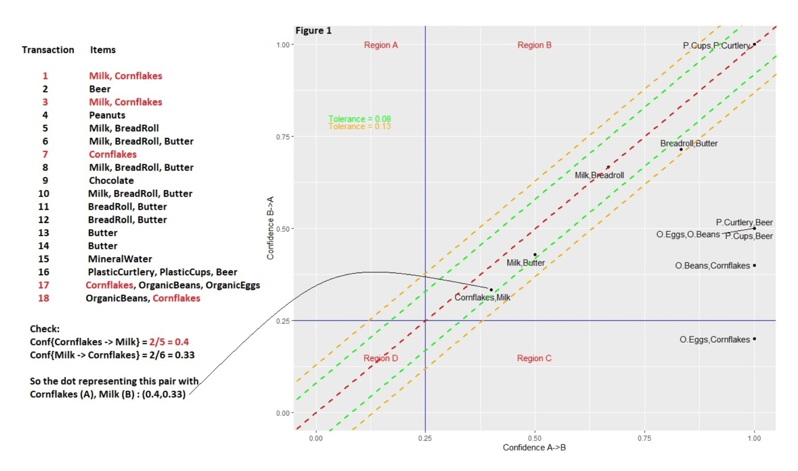
- Using confidences of pairs of products and the confidence of their reciprocal to rank cross-selling recommendations
- Transactions for a user listed on the left
- Conf(Cornflakes → Milk) is the confidence which is the probability that someone wil buy milk given they’ve also bought cornflakes
- = num_corn_milk_sold/num_corn_sold = 2 / 5 = 0.40 (equivalent to formula above in key metrics)
- Conf(Milk → Cornflakes) = num_corn_milk_sold/num_milk_sold = 2 / 6 = 0.33
- The more similar the two probabilities are for each pair, the closer the point comes to the line of equality (the red dashed line that runs diagonally through the origin), and the more complementary the items become.
- It’s rare that a dot will land exactly on the line of equality, so the green and orange lines (tolerances) parallel to the red line mark how far off a dot is from this ideal setting, using different levels of tolerance.
- Large asymmetries indicate one-sided complementarity. Such imbalances will be quite common when, for instance, items of hugely different prices are involved.
- Example: When someone buys a house, for example, they may want to buy a bookcase, but buying a bookcase doesn’t mean someone wants to buy a house: this would be an instance of one-sided complementarity.
- Me: So choosing recommendations should take into consideration the price of item in the cart and select one-sided asymmetries with high confidences that are similar to that price or less.
- Tolerances categorize and rank pairs of products
- Complementary at such-and-such a tolerance level – 0%, 1%, 5%, etc. – generating a score of sorts.
- In cases where a dot representing the two-way dependencies between two items falls within a narrow band – corresponding to a smaller tolerance – the more inseparable the items are, and the more sensible a cross-selling recommendation may become.
2.7 Cohort Analysis
- Visualizing user retention is a useful way for e.g. retail and subscription businesses to keep track of how long customers and users tend to stay with the them and spot differences in how cohort sizes change over time.
- Misc
- Cohort - group of new users who start an interaction (e.g. subscription, logging on to a website) on the same date
- {cohort} has some nice cleaning functions
- A grouped line chart would be another visualization option
- Compare cohorts by month
- Table showing cohort interactions over time
- Example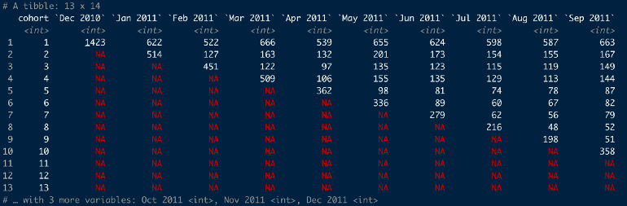
online_cohorts %>%
cohort_table_month(id_var = CustomerID, date = InvoiceDate)- Takes tibble with a customer id column and invoice date column and creates a monthly cohort table
- Cohort 1 all had their first purchase on Dec 2010 and only 622 customers from this group also made a purchase in Jan 2011
- With this function, customers don’t have make a purchase in Jan 2011 in order to be counted in Feb 2011
- As a percent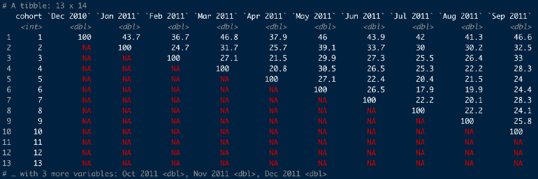
online_cohorts %>%
cohort_table_month(id_var = CustomerID, date = InvoiceDate) %>%
cohort_table_pct()36.7% of the Dec 2010 cohort made a purchase in Feb 2011
Compare cohorts by period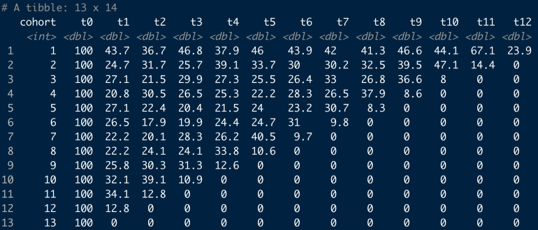
online_cohorts %>%
cohort_table_month(id_var = CustomerID,
date = InvoiceDate) %>%
shift_left_pct()Cohort1’s t0 is Dec 2010 and cohort2’s t0 is Jan 2011
Heatmap
- Convert to long format
online_cohorts %>%
cohort_table_month(id_var = CustomerID, date = InvoiceDate) %>%
cohort_table_pct() %>%
pivot_longer(-cohort) %>%
filter(name != "t0") # these are all 100 so not interestingColumns: cohort, name (i.e. period), value (percentage)
Heatmap table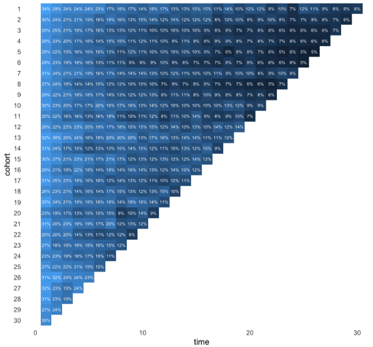
online_cohorts %>%
mutate(time = as.numeric(str_remove(name, "t"))) %>%
ggplot(aes(time, reorder(cohort, desc(cohort)))) +
geom_raster(aes(fill = log(value))) +
coord_equal(ratio = 1) +
geom_text(aes(label = glue::glue("{round(value,0){style='color: #990000'}[}]{style='color: #990000'}%")),
size = 3,
colour = "snow") +
scale_fill_gradient(guide = "none") +
theme_minimal(base_size = 16) +
theme(panel.grid = element_blank(),
panel.border = element_blank()) +
labs(y = "cohort")2.8 Retention Analysis
- Retention Rate - measures the proportion of users that return to your product over some specified time
- 4 choices to make before calculation the retention rate:
- Retention rate type
- User type
- Action type
- Cohorts
- 4 choices to make before calculation the retention rate:
- Types
- N-day (or week or month) Retention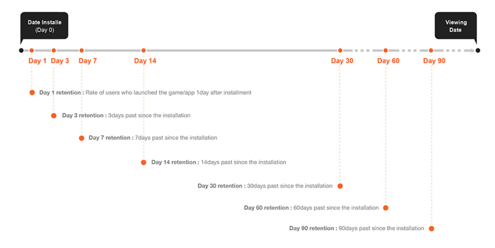
- measures among users who first used the product at day 0, what proportion of them are still active at day N.
- N indicates the end point of the interval
- Rolling Retention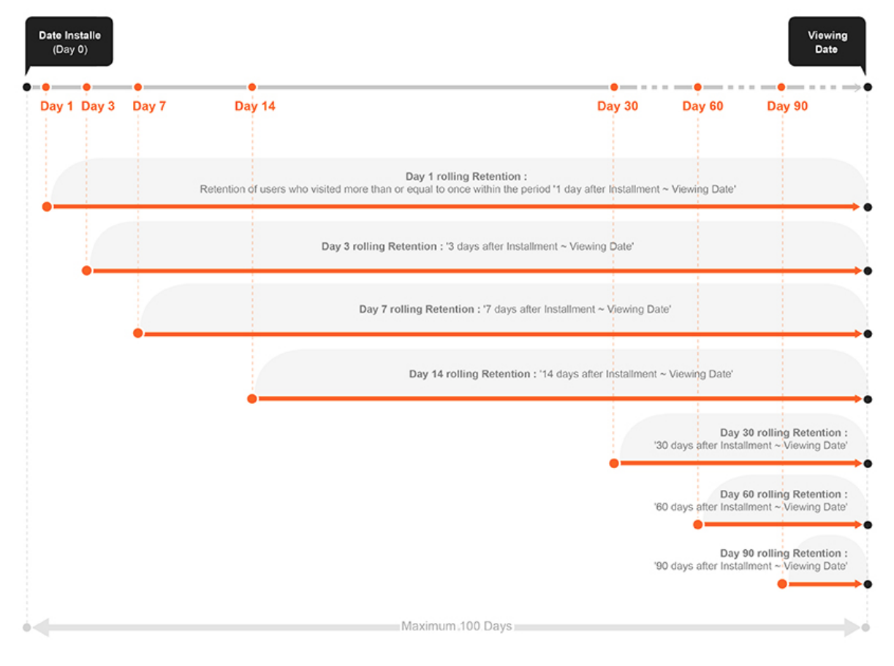
- End point is the day you view the data and the choice of starting point determines the length of the interval
- Bracket Retention
- A proportion of users after day 0, that had activity during some interval. This interval occurs sometime after day 0 and the data viewing date.
- example: Pinterest
- Measures “the percentage of new signups that are still doing key actions during a one-week time window of 28–35 days after signup”.
- N-day (or week or month) Retention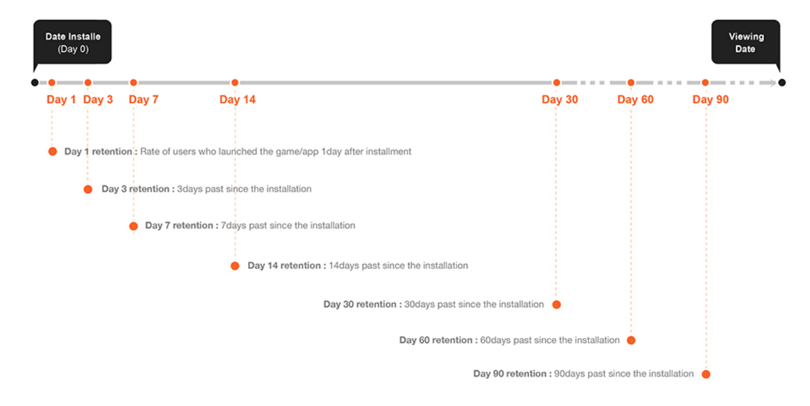
- User
- types
- New user
- Churned user: inactive after day x
- Inactive user: inactive from day 0 to day x
- Reactive user: active after churned/inactive
- Active user: active users who are not new and not reactive
- New user retention measures the proportion of new users who stay active.
- Active user retention measures the proportion of active users who stay active
- types
- Action
- Choosing an action
- More interested in monetization values?
- Are you in a growth stage where you looking to retain your users through certain actions?
- types
- visiting the product page
- staying for a certain amount of time
- conducting certain actions (e.g.. scrolling)
- purchasing a product
- Choosing an action
- Cohorts
- Demographics: gender, age, etc.
- Acquisition: acquisition time, acquisition source, etc.
- Behavior
- Analysis
- Calculate Retention Rates
- Recommendations
- Start with the N-day/week/month retention
- Start with new users (especially for new products)
- Determine the time interval
- plot how frequently users use the product
- plot % users who use the product vs times with various intervals
- plot retention with various intervals
- see which one makes sense for your product.
- It’s okay to include more than one time interval in your analysis.
- Retention Rate vs Time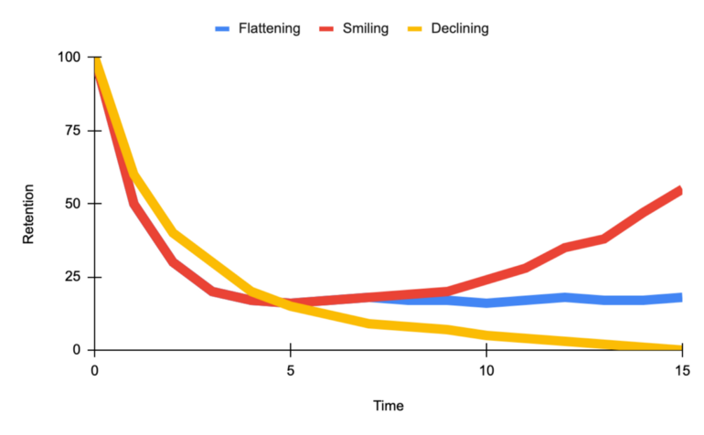
- Smiling curve when users come back more and more over time.
- Declining curve signifies danger
- Flattening curve signifies a healthy product.
- The goal for a product is to shift the curve up and flatten or uptail the curve
- Recommendations
- Descriptive statistics and correlations
- Survival model
- Dashboard (all available cohorts/groups)
- retention curve
- triangle retention table (see Cohort Analysis section)
- Cohort (date), New Users (count), Day 1, Day 2, …
- Every cohort has 100% for Day 0 so not necessary to include
- Cohort (date), New Users (count), Day 1, Day 2, …
- What is the user behavior that contributes to the moment a new user becomes a long-term customer?
- i.e. Find the user events and onboarding behaviors that are related to retention in future weeks/months.
- e.g. Facebook focuses on “getting 7 friends in 10 days.”
- How do the most successful long-term users form a habit to use the product?
- Descriptive analysis on long-term users
- Questions
- What features do they keep using?
- What attributes do they have?
- What is the user journey for them?
- Calculate Retention Rates
2.9 Net Promoter Score (NPS)
- Use sentiment analysis on customer reviews and social media posts to generate a proxy for NPS based on sentiment scores.
- Use Cases
- Identify your brand’s promoters, detractors, and neutrals
- Calculate the % of promoters vs detractors to give you insights into which direction your brand is progressing. A higher % of promoters indicates potential revenue growth and vice versa indicates that your brand is going down.
- Specific text strings from extremely negative reviews will give you insights into areas of improvement. A simple word cloud for positive and negative reviews will give you insights into what works best for your brand and does not.
- The same exercise repeated every quarter will give you insights into the trend of customer experience — is there an increasing trend of promoters or an increasing trend of detractors?
- Also see Survey, Design >> Response Scales >> Net Promoter Score
- Process
- Calculate the sentiment score for each customer review.
- min-max normalize scores to a range of 0 to 10
- For every customer, calculate the average sentiment score.
- Optional: weight score by number of reviews posted
- Stems from the idea that we would like to focus on customers posting frequent reviews rather than customers who buy/post very rarely
- Optional: weight score by number of reviews posted
- Categorize customers are promoters, neutrals, or detractors based on the average sentiment score.
- For ideas on bins, see Survey, Design >> Response Scales >> Net Promoter Score
- Calculate the sentiment score for each customer review.
- Example (only split into promoters/detractors)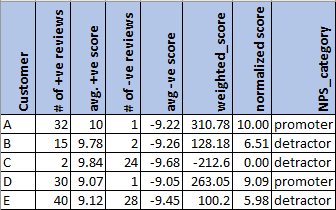